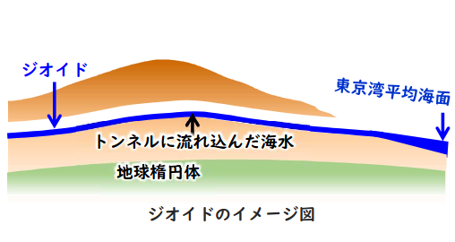
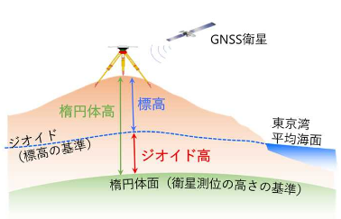

pie title 測量種類別の事業費の割合
"公共測量" : 89
"民間の測量" : 20
"基本測量": 1
測量法における測量の分類
測量の分類は，一般的には，
- 測量の手法
- 測量の目的
によって分類され，具体的には，多角測量，水準測量，地形測量，写真測量，地図測量，GISなどがあります．一方，測量法に基づく測量の分類という観点だと，測量法では，測量を
- 基本測量
- 公共測量
- 基本測量及び公共測量以外の測量
の三種類に分類しています．
基本測量
測量法第4条
「基本測量」とは，すべての測量の基礎となる測量で，国土地理院の行うものをいう
基本測量とは以下２つの特徴があります
- 国土地理院が実施する測量
- すべての測量の基礎となる測量
▶ 基本測量事業内容
| 測量内容 | 説明 |
|---|---|
| 基準点測量 | 各種測量に地球上の正確な位置と高さを与える国家基準点体系（三角点，水準点等）の整備と維持管理事業 |
| 地殻変動観測 | 準点測量を継続的に行うことにより，地殻の動きをとらえる測量事業 |
| 地理情報の整備や２万５千分の１地形図等基本図の作成 | デジタル形式の基本図「電子国土基本図」の整備など |
▶ 測量標の保全
測量法第22条
何人も，国土地理院の長の承諾を得ないで，基本測量の測量標を移転し，汚損し，その他その効用を害する行為をしてはならない．
公共測量
測量法第5条
「公共測量」とは，基本測量以外の測量で次に掲げるものをいい，建物に関する測量その他の局地的測量又は小縮尺図の調製その他の高度の精度を必要としない測量で政令で定めるものを除く．
- その測量の実施に要する費用の全部又は一部を国又は公共団体が負担し，又は補助して行う測量
- 基本測量又は公共測量の測量成果を使用して次の事業のために実施する測量で国土交通大臣が指定したもの
- 行政庁の許可，認可その他の処分を受けて行われる事業
- その実施に要する費用の全部又は一部について国又は公共団体の負担又は補助，貸付けその他の助成を受けて行われる事業
公共測量となる測量は以下の条件すべてを満たす測量だけとなります
- 測量経費: 測量の費用を国・公共団体が負担・補助して実施する測量
- 測量の精度: 高精度な測量に限る．国土地理院が測量計画機関から提出された計画書を審査し必要な精度が得られる方法で行われているか判断
- 使用する測量: 基本測量・公共測量成果を２点以上使用する測量１点以下の場合でも規模大の測量
公共測量は日本で実施される測量の大部分を占めています．（source: 国土地理院）
▶ 公共測量の表示等
測量法第37条
公共測量を実施する者は，当該測量において設置する測量標に，公共測量の測量標であること及び測量計画機関の名称を表示しなければならない．
- 公共測量を実施する者は，関係市町村長に対して当該測量を実施するために必要な情報の提供を求めることができる．
- 測量計画機関は，公共測量において永久標識を設置したときは，遅滞なく，その種類及び所在地その他国土交通省令で定める事項を国土地理院の長に通知しなければならない．
- 測量計画機関は，自ら実施した公共測量の永久標識を移転し，撤去し，又は廃棄したときは，遅滞なく，その種類及び旧所在地その他国土交通省令で定める事項を国土地理院の長に通知しなければならない．
測量法第37条2にて，公共測量を実施するにあたって，地元の事情に最も精通していると考えられる関係市町村長に情報の提供を求めることができると規定されています．都道府県知事ではなく関係市町村長であるところに注意が必要です．
基本測量及び公共測量以外の測量
測量法第6条
この法律において「基本測量及び公共測量以外の測量」とは，基本測量又は公共測量の測量成果を使用して実施する基本測量及び公共測量以外の測量（建物に関する測量その他の局地的測量又は小縮尺図の調製その他の高度の精度を必要としない測量で政令で定めるものを除く．）をいう．
測量法と測量の基準
測量法第11条1項
位置は，地理学的経緯度及び平均海面からの高さで表示する． ただし，場合により，直角座標及び平均海面からの高さ，極座標及び平均海面からの高さ又は地心直交座標で表示することができる
測量の基準に関して，位置の表示は原則「位置は，地理学的経緯度及び平均海面からの高さで表示する」ということになっています．
世界測地系
測量法第11条第2項
前項第一号の地理学的経緯度は，世界測地系に従つて測定しなければならない．
世界測地系は，概念としてはただ一つのものですが，国ごとに採用する時期や構築に当たっての詳細な手法及び実現精度が異なります．代表例として以下の世界測地系があります：
| 世界測地系 | 特徴 |
|---|---|
| ITRF系（国際地球基準座標系） | 地球の重心が原点，X軸をグリニッジ子午線と赤道との交点の方向，Y軸を東経90度の方向，Z軸を北極の方向にとった３次元直交座標(=Z軸は地球の自転軸と一致している) |
| WGS系 | アメリカのGPSに用いられている．高精度・継続性よりむしろリアルタイム性が重要視される軍事，航法，海図，ナビゲーションの分野に適した世界測地系とされている．ITRF系とほぼ同一 |
| PZ系 | ロシアの測位システムに用いられている |
日本では，ITRF系GRS80楕円体を採用しています．
ジオイド
Def: ジオイド
平均海面を仮想的に陸地へ延長した面を「ジオイド」と呼ぶ．日本では，日本経緯度原点に最も近い東京湾の平均海面を通る水準面がジオイドと一致するものと考え, 高さの基準としている．ジオイドは重力方向に対して直交しています．

水は重力の影響を受けて，高いところから低いところへ流れますが，地面が平坦なところでも，重力が小さいところから大きいところへ水が流れます． 地球内部の質量分布の不均一などによって，重力分布は一様ではないため，東京湾平均海面を基準としたジオイドはゆるやかな凹凸をしています．
日本の土地の高さ（標高）は，東京湾の平均海面を基準（標高０ｍ）として測られています．水が高いこところから低いところへ流れることを表したジオイドを用いて標高が計算されているので．標高の高さと水の流れる方向は対応しているといえます．
▶ 標高とジオイド高と楕円体高

- ジオイド高: 衛星測位の高さの基準である楕円体面から「ジオイド」までの高さ，国土地理院が発表している
- 楕円体高: GPSや準天頂衛星システム等のGNSS測量で得られる高さで，楕円体面から地表面までの高さ
\[ \text{標高} = \text{楕円体高} - \text{ジオイド高} \]